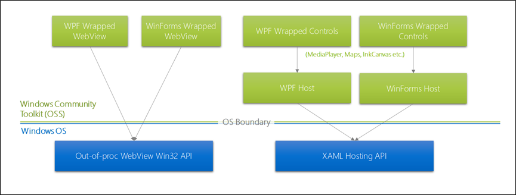

Host WinRT XAML controls in desktop apps (XAML Islands)
Important
This topic uses or mentions types from the CommunityToolkit/Microsoft.Toolkit.Win32 GitHub repo. For important info about XAML Islands support, please see the XAML Islands Notice in that repo.
Starting in Windows 10, version 1903, you can host WinRT XAML controls in non-UWP desktop applications using a feature called XAML Islands. This feature enables you to enhance the look, feel, and functionality of your existing WPF, Windows Forms, and C++ desktop (Win32) applications with the latest Windows UI features that are only available via WinRT XAML controls. This means that you can use UWP features such as Windows Ink and controls that support the Fluent Design System in your existing WPF, Windows Forms, and C++ desktop applications.
You can host any WinRT XAML control that derives from Windows.UI.Xaml.UIElement, including:
- Most first-party WinRT XAML control provided by the Windows SDK or the WinUI 2 library (see exceptions).
- Any custom WinRT XAML control (for example, a user control that consists of several WinRT XAML controls that work together). You must have the source code for the custom control so you can compile it with your application.
Fundamentally, XAML Islands are created by using the WinRT XAML hosting API. This API consists of several Windows Runtime classes and COM interfaces that were introduced in the Windows 10, version 1903 SDK. We also provide a set of XAML Island .NET controls in the Windows Community Toolkit that use the WinRT XAML hosting API internally and provide a more convenient development experience for WPF and Windows Forms apps.
The way you use XAML Islands depends on your application type and the types of WinRT XAML controls you want to host.
Note
If you have feedback about XAML Islands, create a new issue in the Microsoft.Toolkit.Win32 repo and leave your comments there.
Requirements
XAML Islands have these run time requirements:
- Windows 10, version 1903, or a later release.
- If your application is not packaged in an MSIX package for deployment, the computer must have the Visual C++ Runtime installed.
WPF and Windows Forms applications
Note
Using XAML Islands to host WinRT XAML controls in WPF and Windows Forms apps is currently supported only in apps that target .NET Core 3.x. XAML Islands are not yet supported in apps that target .NET, or in apps that any version of the .NET Framework.
We recommend that WPF and Windows Forms applications use the XAML Island .NET controls that are available in the Windows Community Toolkit. These controls provide an object model that mimics (or provides access to) the properties, methods, and events of the corresponding WinRT XAML controls. They also handle behavior such as keyboard navigation and layout changes.
There are two sets of XAML Island controls for WPF and Windows Forms applications: wrapped controls and host controls.
Wrapped controls
WPF and Windows Forms applications can use a selection of XAML Island controls that wrap the interface and functionality of a specific WinRT XAML control. You can add these controls directly to the design surface of your WPF or Windows Forms project and then use them like any other WPF or Windows Forms control in the designer.
The following wrapped WinRT XAML controls are currently available in the Windows Community Toolkit.
| Control | Minimum supported OS | Description |
|---|---|---|
| InkCanvas InkToolbar |
Windows 10, version 1903 | Provide a surface and related toolbars for Windows Ink-based user interaction in your Windows Forms or WPF desktop application. |
| MediaPlayerElement | Windows 10, version 1903 | Embeds a view that streams and renders media content such as video in your Windows Forms or WPF desktop application. |
| MapControl | Windows 10, version 1903 | Enables you to display a symbolic or photorealistic map in your Windows Forms or WPF desktop application. |
For a walkthrough that demonstrates how to use the wrapped WinRT XAML controls, see Use XAML Islands to host a UWP XAML control in a C# WPF app.
Host controls
For custom controls and other scenarios beyond those covered by the available wrapped controls, WPF and Windows Forms applications can also use the WindowsXamlHost control that is available in the Windows Community Toolkit.
| Control | Minimum supported OS | Description |
|---|---|---|
| WindowsXamlHost | Windows 10, version 1903 | Can host any WinRT XAML control that derives from Windows.UI.Xaml.UIElement, including any first-party WinRT XAML control provided by the Windows SDK as well as custom controls. |
For walkthroughs that demonstrate how to use the WindowsXamlHost control, see Use XAML Islands to host a UWP XAML control in a C# WPF app and Host a custom WinRT XAML control in a WPF app using XAML Islands.
Configure your project to use the XAML Island .NET controls
The XAML Island .NET controls require Windows 10, version 1903, or a later version. To use these controls, install one of the NuGet packages listed below. These packages provide everything you need to use the XAML Island wrapped controls and host controls, and they include other related NuGet packages that are also required.
| Type of control | NuGet package | Related articles |
|---|---|---|
| Wrapped controls | Version 6.0.0 or later of these packages:
|
Use XAML Islands to host a UWP XAML control in a C# WPF app |
| Host control | Version 6.0.0 or later of these packages:
|
Use XAML Islands to host a UWP XAML control in a C# WPF app Host a custom WinRT XAML control in a WPF app |
Be aware of the following details:
The host control packages are also included in the wrapped control packages. You can install the wrapped control packages if you want to use both sets of controls.
If you're hosting a custom WinRT XAML control, you'll also need to perform some additional steps to reference the custom control. For more info, see Host a custom WinRT XAML control in a WPF app using XAML Islands.
Web view controls
The Windows Community Toolkit also provides the following .NET controls for hosting web content in WPF and Windows Forms applications. These controls are often used in similar desktop app modernization scenarios as the XAML Island controls, and they are maintained in the same Microsoft.Toolkit.Win32 repo as the XAML Island controls.
| Control | Minimum supported OS | Description |
|---|---|---|
| WebView | Windows 10, version 1803 | Uses the Microsoft Edge rendering engine to show web content. |
| WebViewCompatible | Windows 7 | Provides a version of WebView that is compatible with more OS versions. This control uses the Microsoft Edge rendering engine to show web content on Windows 10 version 1803 and later, and the Internet Explorer rendering engine to show web content on earlier versions of Windows 10, Windows 8.x, and Windows 7. |
To use these controls, install one of these NuGet packages:
- WPF: Microsoft.Toolkit.Wpf.UI.Controls.WebView
- Windows Forms: Microsoft.Toolkit.Forms.UI.Controls.WebView
C++ desktop (Win32) applications
The XAML Island .NET controls are not supported in C++ desktop applications. These applications must instead use the WinRT XAML hosting API provided by the Windows 10 SDK (version 1903 and later).
The WinRT XAML hosting API consists of several Windows Runtime classes and COM interfaces that your C++ desktop application can use to host any WinRT XAML control that derives from Windows.UI.Xaml.UIElement. You can host WinRT XAML controls in any UI element in your application that has an associated window handle (HWND). For more information about this API, see the following articles.
- Using the WinRT XAML hosting API in a C++ desktop app
- Host a standard WinRT XAML control in a C++ desktop app
- Host a custom WinRT XAML control in a C++ desktop app
Note
The wrapped controls and host controls in the Windows Community Toolkit use the WinRT XAML hosting API internally and implement all of the behavior you would otherwise need to handle yourself if you used the WinRT XAML hosting API directly, including keyboard navigation and layout changes. For WPF and Windows Forms applications, we strongly recommend that you use these controls instead of the WinRT XAML hosting API directly because they abstract away many of the implementation details of using the API.
Architecture of XAML Islands
Here's a quick look at how the different types of XAML Island controls are organized architecturally on top of the WinRT XAML hosting API.

The APIs that appear at the bottom of this diagram ship with the Windows SDK. The wrapped controls and host controls are available via NuGet packages in the Windows Community Toolkit.
Limitations and workarounds
The following sections discuss limitations and workarounds for certain UWP development scenarios in desktop apps that use XAML Islands.
Supported only with workarounds
✔️ Hosting controls from the WinUI 2 Library in a XAML Island is supported conditionally in the current release of XAML Islands. If your desktop app uses an MSIX package for deployment, you can host WinUI controls from prerelease or release versions of the Microsoft.UI.Xaml NuGet package. If your desktop app is not packaged using MSIX, you can host WinUI controls only if you install a prerelease version of the Microsoft.UI.Xaml NuGet package, or if you use the Dynamic Dependencies API. Support for hosting controls from the WinUI 3.0 Library is coming in a later release.
✔️ To access the root element of a tree of XAML content in a XAML Island and get related information about the context in which it is hosted, do not use the CoreWindow, ApplicationView, and Window classes. Instead, use the XamlRoot class. For more information, see this section.
✔️ To support the Share contract from a WPF, Windows Forms, or C++ desktop (Win32) app, your app must use the IDataTransferManagerInterop interface to get the DataTransferManager object to initiate the share operation for a specific window. For a sample that demonstrates how to use this interface in a WPF app, see the ShareSource sample.
✔️ Using x:Bind with hosted controls in XAML Islands is not supported. You'll have to declare the data model in a .NET Standard library.
Not supported
🚫 Using XAML Islands in WPF and Windows Forms apps that target the .NET Framework. XAML Islands are supported only in apps that target .NET Core 3.x.
🚫 UWP XAML content in XAML Islands doesn't respond to Windows theme changes from dark to light or vice versa at run time. Content does respond to high contrast changes at run time.
🚫 Adding a Windows.UI.Xaml.WebView control. For WPF and WinForms apps, see these alternatives.
🚫 The MediaPlayer control and MediaPlayerElement host control are not supported in full screen mode.
🚫 Text input with the handwriting view. For more information about this feature, see this article.
🚫 Text controls that use @Places and @People content links. For more information about this feature, see this article.
🚫 XAML Islands do not support hosting a ContentDialog that contains a control that accepts text input, such as a TextBox, RichEditBox, or AutoSuggestBox. If you do this, the input control will not properly respond to key presses. To achieve similar functionality using a XAML Island, we recommend that you host a Popup that contains the input control.
🚫 XAML Islands do not currently support displaying SVG files in a hosted Windows.UI.Xaml.Controls.Image control or by using an Windows.UI.Xaml.Media.Imaging.SvgImageSource object. As a workaround, convert the image files you want to display to raster-based formats such as JPG or PNG.
Window host context for XAML Islands
When you host XAML Islands in a desktop app, you can have multiple trees of XAML content running on the same thread at the same time. To access the root element of a tree of XAML content in a XAML Island and get related information about the context in which it is hosted, use the XamlRoot class. The CoreWindow, ApplicationView, and Window classes won't provide the correct information for XAML Islands. CoreWindow and Window objects do exist on the thread and are accessible to your app, but they won't return meaningful bounds or visibility (they are always invisible and have a size of 1x1). For more information, see Windowing hosts.
For example, to get the bounding rectangle of the window that contains a WinRT XAML control that is hosted in a XAML Island, use the XamlRoot.Size property of the control. Because every WinRT XAML control that can be hosted in a XAML Island derives from Windows.UI.Xaml.UIElement, you can use the XamlRoot property of the control to access the XamlRoot object.
Size windowSize = myUWPControl.XamlRoot.Size;
Do not use the CoreWindows.Bounds property to get the bounding rectangle.
// This will return incorrect information for a WinRT XAML control that is hosted in a XAML Island.
Rect windowSize = CoreWindow.GetForCurrentThread().Bounds;
For a table of common windowing-related APIs that you should avoid in the context of XAML Islands and the recommended XamlRoot replacements, see the table in this section.
For a sample that demonstrates how to use this interface in a WPF app, see the ShareSource sample.
Additional resources
For more background information and tutorials about using XAML Islands, see the following articles and resources:
- Modernize a WPF app tutorial: This tutorial provides step-by-step instructions for using the wrapped controls and host controls in the Windows Community Toolkit to add WinRT XAML controls to an existing WPF line-of-business application. This tutorial includes the complete code for the WPF application as well as detailed instructions for each step in the process.
- XAML Islands code samples: This repo contains Windows Forms, WPF, and C++ desktop (Win32) samples that demonstrate how to use XAML Islands.
- XAML Islands v1 - Updates and Roadmap: This blog post discusses many common questions about XAML Islands and provides a detailed development roadmap.